Ortholog Divergence Report
Input: HHLA2.valid.longest.fa · N sequences: 294 · Aligned length: 1711 codons
Reference: Pezoporus_flaviventris
Quick risk overview
- LOW: 0
- INTERMEDIATE: 0
- HIGH: 43071


Composition & complexity per sequence
Saved as per_sequence_composition.csv. High low-complexity or repeat content can reduce BLAST sensitivity due to soft masking.
| id | GC | GC skew | CpG dens. | AA LCR frac | NT repeat frac | AA len | CDS len |
|---|---|---|---|---|---|---|---|
| Pezoporus_flaviventris | 0.58911 | 0.05322 | 0.04793 | 0.15347 | 0.69967 | 202 | 606 |
| Orycteropus_afer_afer | 0.39813 | -0.07451 | 0.00703 | 0.05152 | 0.69555 | 427 | 1281 |
| Calidris_pugnax | 0.41993 | -0.03326 | 0.00652 | 0.03911 | 0.71601 | 358 | 1074 |
| Alligator_mississippiensis | 0.42907 | -0.00609 | 0.01481 | 0.06005 | 0.69974 | 383 | 1149 |
| Cervus_canadensis | 0.41833 | -0.01594 | 0.01751 | 0.0475 | 0.71417 | 400 | 1200 |
| Dryobates_pubescens | 0.46735 | 0.02206 | 0.01204 | 0.0 | 0.70533 | 388 | 1164 |
| Ammospiza_nelsoni | 0.44349 | 0.02355 | 0.01236 | 0.05128 | 0.75214 | 351 | 1053 |
| Corvus_cornix_cornix | 0.43662 | 0.03226 | 0.0094 | 0.0507 | 0.76244 | 355 | 1065 |
| Erinaceus_europaeus | 0.37901 | -0.03594 | 0.00802 | 0.05769 | 0.70513 | 416 | 1248 |
| Hylobates_moloch | 0.38285 | -0.0254 | 0.00796 | 0.03183 | 0.72149 | 377 | 1131 |
| Pseudophryne_corroboree | 0.39669 | 0.07407 | 0.01471 | 0.0 | 0.77686 | 363 | 1089 |
| Bombina_bombina | 0.34903 | 0.02116 | 0.00555 | 0.06094 | 0.67959 | 361 | 1083 |
| Bufo_gargarizans | 0.37072 | 0.06303 | 0.01403 | 0.03037 | 0.70561 | 428 | 1284 |
| Catharus_ustulatus | 0.46003 | 0.01639 | 0.01208 | 0.07014 | 0.75339 | 442 | 1326 |
| Meles_meles | 0.38653 | 0.00215 | 0.00832 | 0.02993 | 0.69659 | 401 | 1203 |
| Rana_temporaria | 0.37555 | 0.12791 | 0.01457 | 0.06332 | 0.66594 | 458 | 1374 |
| Dromiciops_gliroides | 0.38047 | -0.0531 | 0.00927 | 0.08081 | 0.70875 | 396 | 1188 |
| Pan_troglodytes | 0.4058 | -0.02381 | 0.01289 | 0.02899 | 0.69887 | 414 | 1242 |
| Phaenicophaeus_curvirostris | 0.41584 | 0.02381 | 0.01239 | 0.0 | 0.70215 | 404 | 1212 |
| Emys_orbicularis | 0.40483 | 0.0 | 0.01394 | 0.03343 | 0.7428 | 359 | 1077 |
| Talpa_occidentalis | 0.39147 | 0.0297 | 0.00776 | 0.0814 | 0.72868 | 430 | 1290 |
| Monodelphis_domestica | 0.36371 | -0.01624 | 0.01014 | 0.08101 | 0.71055 | 395 | 1185 |
| Caloenas_nicobarica | 0.43714 | 0.02397 | 0.0143 | 0.05714 | 0.7381 | 350 | 1050 |
| Peromyscus_leucopus | 0.41854 | 0.05 | 0.01346 | 0.02915 | 0.73916 | 446 | 1338 |
| Lemur_catta | 0.40114 | -0.00204 | 0.01063 | 0.03186 | 0.6732 | 408 | 1224 |
| Camarhynchus_parvulus | 0.44255 | 0.00858 | 0.01236 | 0.03704 | 0.76163 | 351 | 1053 |
| Molothrus_aeneus | 0.43644 | 0.02648 | 0.01157 | 0.05067 | 0.74756 | 375 | 1125 |
| Geotrypetes_seraphini | 0.37903 | 0.00236 | 0.01614 | 0.0457 | 0.73925 | 372 | 1116 |
| Antrostomus_carolinensis | 0.42539 | -0.00228 | 0.01261 | 0.0 | 0.7345 | 344 | 1032 |
| Theropithecus_gelada | 0.39777 | 0.00216 | 0.01462 | 0.10825 | 0.68299 | 388 | 1164 |
| Hyla_sarda | 0.37716 | 0.15429 | 0.01438 | 0.02586 | 0.67385 | 464 | 1392 |
| Sarcophilus_harrisii | 0.35284 | -0.05288 | 0.00679 | 0.08906 | 0.66921 | 393 | 1179 |
| Octodon_degus | 0.42593 | 0.01863 | 0.015 | 0.0 | 0.69929 | 378 | 1134 |
| Oenanthe_melanoleuca | 0.44099 | -0.00542 | 0.01117 | 0.05502 | 0.75199 | 418 | 1254 |
| Microcaecilia_unicolor | 0.42096 | 0.02575 | 0.02532 | 0.07588 | 0.71093 | 369 | 1107 |
| Aphelocoma_coerulescens | 0.43762 | 0.01702 | 0.00746 | 0.06145 | 0.77561 | 358 | 1074 |
| Chaetura_pelagica | 0.46719 | 0.10112 | 0.01316 | 0.10236 | 0.75591 | 127 | 381 |
| Cygnus_atratus | 0.43143 | -0.01545 | 0.01239 | 0.1 | 0.73619 | 350 | 1050 |
| Aotus_nancymaae | 0.39698 | -0.02605 | 0.01115 | 0.05728 | 0.70485 | 419 | 1257 |
| Tympanuchus_pallidicinctus | 0.4053 | -0.00935 | 0.00948 | 0.07102 | 0.74148 | 352 | 1056 |
| Trachypithecus_francoisi | 0.39875 | 0.00781 | 0.01481 | 0.06776 | 0.69081 | 428 | 1284 |
| Ranitomeya_imitator | 0.38179 | 0.12692 | 0.01543 | 0.0 | 0.71586 | 454 | 1362 |
| Eumetopias_jubatus | 0.3774 | 0.01198 | 0.00905 | 0.04068 | 0.68136 | 295 | 885 |
| Choloepus_didactylus | 0.40412 | 0.06314 | 0.01071 | 0.03704 | 0.68807 | 405 | 1215 |
| Chlorocebus_sabaeus | 0.3977 | 0.00963 | 0.01687 | 0.06667 | 0.67356 | 435 | 1305 |
| Chelonoidis_abingdonii | 0.40401 | 0.02128 | 0.01625 | 0.07736 | 0.75931 | 349 | 1047 |
| Dasypus_novemcinctus | 0.39851 | 0.04348 | 0.00991 | 0.09901 | 0.66172 | 404 | 1212 |
| Phasianus_colchicus | 0.40103 | 0.0 | 0.01115 | 0.05656 | 0.72579 | 389 | 1167 |
| Pteropus_vampyrus | 0.38614 | -0.00427 | 0.00991 | 0.03465 | 0.69637 | 404 | 1212 |
| Equus_asinus | 0.41196 | 0.01789 | 0.00984 | 0.11302 | 0.68387 | 407 | 1221 |
| Macaca_fascicularis | 0.39578 | 0.0 | 0.01948 | 0.09976 | 0.70803 | 411 | 1233 |
| Cebus_imitator | 0.39459 | 0.00806 | 0.00796 | 0.0 | 0.70167 | 419 | 1257 |
| Mustela_erminea | 0.38833 | 0.01288 | 0.00751 | 0.0675 | 0.70333 | 400 | 1200 |
| Microtus_ochrogaster | 0.41818 | 0.01449 | 0.01592 | 0.02727 | 0.76894 | 440 | 1320 |
| Coturnix_japonica | 0.42409 | -0.024 | 0.01273 | 0.08906 | 0.70314 | 393 | 1179 |
| Emydura_macquarii_macquarii | 0.43228 | 0.01948 | 0.01685 | 0.07789 | 0.73053 | 475 | 1425 |
| Ornithorhynchus_anatinus | 0.52504 | -0.08513 | 0.04957 | 0.11147 | 0.69682 | 619 | 1857 |
| Pseudorca_crassidens | 0.38702 | 0.02692 | 0.01043 | 0.04087 | 0.72356 | 416 | 1248 |
| Fukomys_damarensis | 0.39531 | 0.00847 | 0.01007 | 0.0 | 0.70854 | 199 | 597 |
| Gallus_gallus | 0.40636 | -0.02326 | 0.01118 | 0.0567 | 0.73969 | 388 | 1164 |
| Corvus_moneduloides | 0.4385 | 0.02355 | 0.01128 | 0.0507 | 0.76901 | 355 | 1065 |
| Callorhinus_ursinus | 0.3794 | -0.00662 | 0.00671 | 0.09799 | 0.67588 | 398 | 1194 |
| Pogoniulus_pusillus | 0.45955 | 0.08099 | 0.01538 | 0.04126 | 0.75971 | 412 | 1236 |
| Monodon_monoceros | 0.38647 | 0.0125 | 0.01128 | 0.02899 | 0.69968 | 414 | 1242 |
| Petaurus_breviceps_papuanus | 0.38023 | -0.01322 | 0.00671 | 0.19095 | 0.65075 | 398 | 1194 |
| Mirounga_angustirostris | 0.37476 | 0.01799 | 0.00579 | 0.07803 | 0.67919 | 346 | 1038 |
| Peromyscus_californicus_insignis | 0.4012 | 0.02488 | 0.00899 | 0.0 | 0.72954 | 334 | 1002 |
| Dama_dama | 0.42083 | -0.0297 | 0.02168 | 0.0475 | 0.70417 | 400 | 1200 |
| Papio_anubis | 0.39578 | 0.0082 | 0.01867 | 0.09732 | 0.70479 | 411 | 1233 |
| Pongo_abelii | 0.39788 | -0.02259 | 0.0139 | 0.02941 | 0.70507 | 408 | 1224 |
| Phoca_vitulina | 0.38653 | -0.00215 | 0.00832 | 0.09726 | 0.66667 | 401 | 1203 |
| Opisthocomus_hoazin | 0.42448 | -0.00613 | 0.00783 | 0.0 | 0.73958 | 128 | 384 |
| Terrapene_triunguis | 0.39815 | 0.0 | 0.01205 | 0.08056 | 0.76389 | 360 | 1080 |
| Ursus_americanus | 0.38095 | 0.00926 | 0.00706 | 0.10317 | 0.67725 | 378 | 1134 |
| Anser_cygnoides | 0.42843 | 0.0 | 0.01154 | 0.10086 | 0.74159 | 347 | 1041 |
| Falco_rusticolus | 0.4212 | -0.00227 | 0.0086 | 0.0 | 0.73639 | 349 | 1047 |
| Malaclemys_terrapin_pileata | 0.39216 | 0.00952 | 0.01215 | 0.03361 | 0.7563 | 357 | 1071 |
| Meriones_unguiculatus | 0.42267 | 0.05861 | 0.01578 | 0.0 | 0.73874 | 444 | 1332 |
| Pezoporus_wallicus | 0.49249 | -0.06098 | 0.01807 | 0.0 | 0.73874 | 111 | 333 |
| Falco_cherrug | 0.42025 | 0.0 | 0.00956 | 0.0 | 0.73639 | 349 | 1047 |
| Neopelma_chrysocephalum | 0.42171 | 0.02574 | 0.01474 | 0.05814 | 0.73643 | 430 | 1290 |
| Myodes_glareolus | 0.41497 | 0.00911 | 0.01589 | 0.04535 | 0.75283 | 441 | 1323 |
| Columba_livia | 0.42614 | -0.00444 | 0.00758 | 0.0 | 0.73864 | 352 | 1056 |
| Pelodiscus_sinensis | 0.4072 | 0.00227 | 0.01664 | 0.07479 | 0.72207 | 361 | 1083 |
| Hippopotamus_amphibius_kiboko | 0.37879 | 0.06526 | 0.01197 | 0.05742 | 0.68182 | 418 | 1254 |
| Propithecus_coquereli | 0.40293 | 0.00606 | 0.011 | 0.05128 | 0.72039 | 273 | 819 |
| Equus_przewalskii | 0.41812 | 0.02187 | 0.00998 | 0.09726 | 0.67249 | 401 | 1203 |
| Falco_peregrinus | 0.42967 | 0.01345 | 0.00964 | 0.0 | 0.76686 | 346 | 1038 |
| Bos_javanicus | 0.41505 | -0.03704 | 0.01215 | 0.04612 | 0.70631 | 412 | 1236 |
| Psammomys_obesus | 0.41761 | 0.03423 | 0.01205 | 0.0 | 0.75621 | 443 | 1329 |
| Nanorana_parkeri | 0.43825 | 0.01746 | 0.02298 | 0.0 | 0.70601 | 305 | 915 |
| Cuculus_canorus | 0.41376 | 0.0445 | 0.0097 | 0.09593 | 0.75291 | 344 | 1032 |
| Lonchura_striata | 0.44508 | 0.00851 | 0.01422 | 0.05114 | 0.7642 | 352 | 1056 |
| Ovis_canadensis | 0.40541 | -0.00606 | 0.0123 | 0.07617 | 0.67977 | 407 | 1221 |
| Corapipo_altera | 0.43325 | -0.01323 | 0.0123 | 0.0 | 0.75676 | 407 | 1221 |
| Delphinapterus_leucas | 0.38647 | 0.00833 | 0.01128 | 0.02899 | 0.69002 | 414 | 1242 |
| Oryx_dammah | 0.40786 | -0.00803 | 0.01066 | 0.04914 | 0.68468 | 407 | 1221 |
| Bos_indicus_x_Bos_taurus | 0.4113 | -0.02128 | 0.01354 | 0.04535 | 0.70167 | 419 | 1257 |
| Homo_sapiens | 0.40471 | -0.01163 | 0.01648 | 0.02824 | 0.68784 | 425 | 1275 |
| Mauremys_reevesii | 0.40019 | 0.0116 | 0.0158 | 0.03343 | 0.72052 | 359 | 1077 |
| Spea_bombifrons | 0.38187 | 0.06954 | 0.02016 | 0.06593 | 0.70788 | 364 | 1092 |
| Gymnogyps_californianus | 0.43143 | 0.01545 | 0.01239 | 0.04571 | 0.7419 | 350 | 1050 |
| Haliaeetus_albicilla | 0.42286 | 0.01802 | 0.00953 | 0.04286 | 0.72762 | 350 | 1050 |
| Camelus_bactrianus | 0.4357 | 0.04078 | 0.01439 | 0.09645 | 0.73519 | 394 | 1182 |
| Nipponia_nippon | 0.45559 | -0.00917 | 0.01883 | 0.0 | 0.77011 | 319 | 957 |
| Bos_mutus | 0.40732 | -0.02734 | 0.01115 | 0.04535 | 0.70326 | 419 | 1257 |
| Rissa_tridactyla | 0.44381 | -0.00429 | 0.0143 | 0.04 | 0.77143 | 350 | 1050 |
| Dendropsophus_ebraccatus | 0.38299 | 0.12377 | 0.01657 | 0.0 | 0.68774 | 443 | 1329 |
| Haliaeetus_leucocephalus | 0.43794 | -0.03822 | 0.00978 | 0.0 | 0.71548 | 239 | 717 |
| Falco_naumanni | 0.41643 | 0.00459 | 0.00669 | 0.0 | 0.7383 | 349 | 1047 |
| Manis_javanica | 0.38567 | 0.0 | 0.00643 | 0.0854 | 0.68871 | 363 | 1089 |
| Odobenus_rosmarus_divergens | 0.39958 | 0.06316 | 0.00842 | 0.03785 | 0.68875 | 317 | 951 |
| Crocodylus_porosus | 0.42029 | 0.00431 | 0.00907 | 0.0625 | 0.68841 | 368 | 1104 |
| Pteropus_giganteus | 0.38834 | 0.00634 | 0.00904 | 0.03695 | 0.67816 | 406 | 1218 |
| Antechinus_flavipes | 0.35518 | -0.07517 | 0.00567 | 0.15291 | 0.64968 | 412 | 1236 |
| Haemorhous_mexicanus | 0.44134 | -0.01266 | 0.01771 | 0.0 | 0.76909 | 358 | 1074 |
| Pan_paniscus | 0.40078 | -0.02935 | 0.01256 | 0.02824 | 0.69569 | 425 | 1275 |
| Athene_cunicularia | 0.43075 | 0.03769 | 0.01147 | 0.04011 | 0.7106 | 349 | 1047 |
| Pyrgilauda_ruficollis | 0.44824 | 0.03814 | 0.01331 | 0.03704 | 0.79012 | 351 | 1053 |
| Sorex_araneus | 0.43261 | 0.01808 | 0.00963 | 0.08303 | 0.72563 | 554 | 1662 |
| Accipiter_gentilis | 0.42198 | 0.02407 | 0.01017 | 0.04155 | 0.73038 | 361 | 1083 |
| Melospiza_georgiana | 0.44633 | 0.01688 | 0.01037 | 0.05085 | 0.77589 | 354 | 1062 |
| Lagopus_muta | 0.40855 | -0.00837 | 0.01369 | 0.05385 | 0.71795 | 390 | 1170 |
| Melospiza_melodia_melodia | 0.45127 | 0.0127 | 0.01311 | 0.07617 | 0.73055 | 407 | 1221 |
| Falco_biarmicus | 0.42216 | -0.00452 | 0.00956 | 0.0 | 0.73639 | 349 | 1047 |
| Tursiops_truncatus | 0.37803 | 0.02956 | 0.00839 | 0.0 | 0.68622 | 358 | 1074 |
| Hyperolius_riggenbachi | 0.39552 | -0.0128 | 0.0123 | 0.02603 | 0.69993 | 461 | 1383 |
| Colobus_angolensis_palliatus | 0.41187 | -0.00665 | 0.01828 | 0.07123 | 0.70594 | 365 | 1095 |
| Peromyscus_eremicus | 0.40489 | 0.08277 | 0.0136 | 0.03533 | 0.69384 | 368 | 1104 |
| Gavialis_gangeticus | 0.41985 | 0.01952 | 0.00912 | 0.06557 | 0.68397 | 366 | 1098 |
| Oxyura_jamaicensis | 0.42786 | -0.0093 | 0.00896 | 0.03582 | 0.70945 | 335 | 1005 |
| Bufo_bufo | 0.37167 | 0.08632 | 0.00861 | 0.03756 | 0.71127 | 426 | 1278 |
| Castor_canadensis | 0.38008 | -0.02139 | 0.00712 | 0.03659 | 0.7002 | 328 | 984 |
| Chrysemys_picta_bellii | 0.40443 | -0.00457 | 0.01201 | 0.03324 | 0.75346 | 361 | 1083 |
| Rhinopithecus_roxellana | 0.39408 | 0.02231 | 0.0176 | 0.1295 | 0.70584 | 417 | 1251 |
| Pseudopipra_pipra | 0.42286 | -0.0045 | 0.01335 | 0.05714 | 0.73429 | 350 | 1050 |
| Tyto_alba | 0.42368 | -0.02692 | 0.01141 | 0.05 | 0.75526 | 380 | 1140 |
| Geospiza_fortis | 0.44255 | 0.00858 | 0.01236 | 0.03704 | 0.76163 | 351 | 1053 |
| Lathamus_discolor | 0.45245 | 0.02335 | 0.02115 | 0.04899 | 0.73199 | 347 | 1041 |
| Pygoscelis_adeliae | 0.46317 | -0.01887 | 0.0175 | 0.05243 | 0.74157 | 267 | 801 |
| Ceratotherium_simum_simum | 0.41487 | -0.00648 | 0.01525 | 0.03495 | 0.71685 | 372 | 1116 |
| Gopherus_flavomarginatus | 0.39926 | 0.0093 | 0.01487 | 0.07242 | 0.73538 | 359 | 1077 |
| Mauremys_mutica | 0.41534 | -0.0276 | 0.01589 | 0.03175 | 0.71252 | 378 | 1134 |
| Budorcas_taxicolor | 0.40868 | -0.02204 | 0.01148 | 0.04914 | 0.69124 | 407 | 1221 |
| Rhinopithecus_bieti | 0.39422 | -0.00386 | 0.01676 | 0.12329 | 0.69178 | 438 | 1314 |
| Nannospalax_galili | 0.40236 | 0.03766 | 0.01432 | 0.06566 | 0.73401 | 396 | 1188 |
| Mustela_putorius_furo | 0.3875 | -0.00215 | 0.00667 | 0.0675 | 0.705 | 400 | 1200 |
| Taeniopygia_guttata | 0.44296 | -0.01006 | 0.01784 | 0.08824 | 0.74955 | 374 | 1122 |
| Chelonia_mydas | 0.39572 | 0.00706 | 0.01118 | 0.07821 | 0.73464 | 358 | 1074 |
| Neogale_vison | 0.40535 | 0.0293 | 0.00817 | 0.02895 | 0.71121 | 449 | 1347 |
| Passer_montanus | 0.44602 | 0.01486 | 0.01801 | 0.0625 | 0.79167 | 352 | 1056 |
| Serinus_canaria | 0.46349 | 0.00342 | 0.02145 | 0.04524 | 0.75556 | 420 | 1260 |
| Gorilla_gorilla_gorilla | 0.40517 | -0.01992 | 0.01292 | 0.02906 | 0.69088 | 413 | 1239 |
| Elephas_maximus_indicus | 0.40016 | -0.01426 | 0.0155 | 0.07579 | 0.68378 | 409 | 1227 |
| Cervus_elaphus | 0.4175 | -0.02595 | 0.01751 | 0.0475 | 0.71583 | 400 | 1200 |
| Patagioenas_fasciata | 0.42924 | 0.03254 | 0.00746 | 0.0 | 0.76909 | 358 | 1074 |
| Colius_striatus | 0.45137 | 0.03347 | 0.0189 | 0.04533 | 0.71388 | 353 | 1059 |
| Strigops_habroptila | 0.42829 | 0.02262 | 0.01067 | 0.06977 | 0.74419 | 344 | 1032 |
| Mustela_lutreola | 0.39 | 0.0 | 0.00834 | 0.0675 | 0.705 | 400 | 1200 |
| Numida_meleagris | 0.43698 | 0.02846 | 0.01743 | 0.04975 | 0.76866 | 402 | 1206 |
| Manacus_vitellinus | 0.42475 | -0.00435 | 0.01201 | 0.04155 | 0.76454 | 361 | 1083 |
| Eubalaena_glacialis | 0.38769 | 0.01031 | 0.0104 | 0.03597 | 0.71863 | 417 | 1251 |
| Enhydra_lutris_kenyoni | 0.38155 | -0.01525 | 0.00666 | 0.06733 | 0.70324 | 401 | 1203 |
| Diceros_bicornis_minor | 0.41312 | 0.00858 | 0.01331 | 0.03457 | 0.6906 | 376 | 1128 |
| Apus_apus | 0.41766 | -0.04038 | 0.01291 | 0.04167 | 0.75198 | 336 | 1008 |
| Rhinatrema_bivittatum | 0.45421 | -0.05645 | 0.02841 | 0.04945 | 0.72619 | 364 | 1092 |
| Alligator_sinensis | 0.42695 | 0.0 | 0.01226 | 0.06824 | 0.71916 | 381 | 1143 |
| Nomascus_leucogenys | 0.39867 | -0.04348 | 0.01202 | 0.0 | 0.70267 | 250 | 750 |
| Phalacrocorax_carbo | 0.43324 | -0.03448 | 0.01776 | 0.06162 | 0.73483 | 357 | 1071 |
| Condylura_cristata | 0.39394 | 0.08262 | 0.01236 | 0.0 | 0.6936 | 297 | 891 |
| Ursus_maritimus | 0.39072 | 0.0324 | 0.00845 | 0.09873 | 0.68186 | 395 | 1185 |
| Mesitornis_unicolor | 0.43723 | -0.01782 | 0.01473 | 0.05195 | 0.76883 | 385 | 1155 |
| Tachyglossus_aculeatus | 0.5187 | 0.06731 | 0.0416 | 0.17207 | 0.75644 | 401 | 1203 |
| Zonotrichia_albicollis | 0.45195 | 0.00383 | 0.013 | 0.0 | 0.77316 | 385 | 1155 |
| Physeter_macrocephalus | 0.38345 | 0.0332 | 0.00717 | 0.04296 | 0.69849 | 419 | 1257 |
| Delphinus_delphis | 0.38524 | 0.01053 | 0.01055 | 0.0 | 0.71857 | 411 | 1233 |
| Saimiri_boliviensis | 0.40083 | -0.04145 | 0.01247 | 0.0405 | 0.69678 | 321 | 963 |
| Mandrillus_leucophaeus | 0.39161 | -0.00794 | 0.01555 | 0.09324 | 0.70008 | 429 | 1287 |
| Dromaius_novaehollandiae | 0.41709 | 0.01014 | 0.00931 | 0.06345 | 0.77327 | 394 | 1182 |
| Sapajus_apella | 0.39857 | 0.01397 | 0.01194 | 0.0 | 0.70088 | 419 | 1257 |
| Gopherus_evgoodei | 0.40111 | 0.0 | 0.01487 | 0.07242 | 0.74466 | 359 | 1077 |
| Cercocebus_atys | 0.39066 | -0.01468 | 0.01475 | 0.10565 | 0.68223 | 407 | 1221 |
| Peromyscus_maniculatus_bairdii | 0.42308 | 0.04813 | 0.01434 | 0.02715 | 0.75641 | 442 | 1326 |
| Sturnus_vulgaris | 0.43305 | -0.00439 | 0.0076 | 0.06553 | 0.73789 | 351 | 1053 |
| Agelaius_phoeniceus | 0.44105 | 0.01923 | 0.01188 | 0.08397 | 0.75657 | 393 | 1179 |
| Balaenoptera_acutorostrata | 0.3979 | 0.00377 | 0.01503 | 0.04505 | 0.69595 | 444 | 1332 |
| Suncus_etruscus | 0.37512 | 0.05823 | 0.00951 | 0.0 | 0.65432 | 351 | 1053 |
| Camelus_ferus | 0.39476 | -0.0249 | 0.00984 | 0.06143 | 0.73219 | 407 | 1221 |
| Globicephala_melas | 0.38448 | 0.02439 | 0.01109 | 0.0 | 0.7127 | 391 | 1173 |
| Indicator_indicator | 0.43943 | -0.00604 | 0.01327 | 0.03448 | 0.74005 | 377 | 1131 |
| Melozone_crissalis | 0.44981 | 0.01474 | 0.01517 | 0.03977 | 0.75568 | 352 | 1056 |
| Apteryx_mantelli | 0.41337 | -0.00683 | 0.01131 | 0.0 | 0.77119 | 354 | 1062 |
| Chinchilla_lanigera | 0.41972 | -0.00624 | 0.01659 | 0.03403 | 0.71902 | 382 | 1146 |
| Onychomys_torridus | 0.41097 | -0.00205 | 0.01098 | 0.0 | 0.72574 | 395 | 1185 |
| Lepidothrix_coronata | 0.41893 | -0.04327 | 0.01815 | 0.0 | 0.71702 | 331 | 993 |
| Bos_taurus | 0.4113 | -0.02128 | 0.01354 | 0.04535 | 0.70167 | 419 | 1257 |
| Caretta_caretta | 0.39589 | 0.00943 | 0.01028 | 0.08403 | 0.71895 | 357 | 1071 |
| Camelus_dromedarius | 0.40622 | -0.00478 | 0.0107 | 0.0379 | 0.7104 | 343 | 1029 |
| Trachemys_scripta_elegans | 0.39216 | 0.00476 | 0.01215 | 0.03361 | 0.75817 | 357 | 1071 |
| Mirounga_leonina | 0.3738 | 0.01546 | 0.00579 | 0.07803 | 0.67341 | 346 | 1038 |
| Melanerpes_formicivorus | 0.47359 | -0.0128 | 0.01646 | 0.03117 | 0.70476 | 385 | 1155 |
| Onychostruthus_taczanowskii | 0.46141 | 0.01068 | 0.02547 | 0.04187 | 0.75698 | 406 | 1218 |
| Charadrius_vociferus | 0.48387 | 0.04242 | 0.03425 | 0.0 | 0.67644 | 341 | 1023 |
| Eleutherodactylus_coqui | 0.3784 | 0.06238 | 0.02076 | 0.0 | 0.73176 | 466 | 1398 |
| Vombatus_ursinus | 0.39169 | 0.0 | 0.0064 | 0.07674 | 0.66667 | 417 | 1251 |
| Ovis_aries | 0.40786 | 0.0 | 0.0123 | 0.07617 | 0.69533 | 407 | 1221 |
| Pteropus_alecto | 0.38752 | -0.00424 | 0.00822 | 0.03448 | 0.67652 | 406 | 1218 |
| Carlito_syrichta | 0.4202 | -0.00168 | 0.0106 | 0.10381 | 0.70621 | 472 | 1416 |
| Centrocercus_urophasianus | 0.40625 | 0.00699 | 0.00948 | 0.0625 | 0.73295 | 352 | 1056 |
| Zonotrichia_leucophrys_gambelii | 0.44413 | 0.01919 | 0.01422 | 0.03977 | 0.76989 | 352 | 1056 |
| Alexandromys_fortis | 0.41648 | -0.0127 | 0.01513 | 0.03855 | 0.75737 | 441 | 1323 |
| Cricetulus_griseus | 0.45499 | -0.03743 | 0.0067 | 0.09307 | 0.73054 | 548 | 1644 |
| Moschus_berezovskii | 0.40714 | -0.01365 | 0.01271 | 0.05 | 0.70159 | 420 | 1260 |
| Pleurodeles_waltl | 0.37879 | -0.005 | 0.01896 | 0.04261 | 0.67519 | 352 | 1056 |
| Aythya_fuligula | 0.44071 | 0.01695 | 0.01308 | 0.10084 | 0.7479 | 357 | 1071 |
| Grus_americana | 0.43297 | -0.0251 | 0.01269 | 0.06522 | 0.73279 | 368 | 1104 |
| Nycticebus_coucang | 0.41205 | -0.00195 | 0.01206 | 0.06265 | 0.69639 | 415 | 1245 |
| Cygnus_olor | 0.42843 | -0.01345 | 0.0125 | 0.10663 | 0.74256 | 347 | 1041 |
| Sorex_fumeus | 0.3975 | 0.03983 | 0.00667 | 0.1025 | 0.71583 | 400 | 1200 |
| Meleagris_gallopavo | 0.42889 | -0.01209 | 0.01334 | 0.04667 | 0.7437 | 450 | 1350 |
| Neomonachus_schauinslandi | 0.38767 | 0.05641 | 0.00597 | 0.08151 | 0.68588 | 503 | 1509 |
| Gracilinanus_agilis | 0.41115 | -0.10997 | 0.01158 | 0.06625 | 0.67403 | 317 | 951 |
| Balaenoptera_musculus | 0.38774 | 0.04232 | 0.01296 | 0.05181 | 0.6943 | 386 | 1158 |
| Xenopus_tropicalis | 0.37902 | 0.00274 | 0.0104 | 0.0 | 0.70093 | 321 | 963 |
| Arvicola_amphibius | 0.41189 | 0.02674 | 0.0147 | 0.02863 | 0.76285 | 454 | 1362 |
| Macaca_nemestrina | 0.39762 | 0.002 | 0.01668 | 0.09762 | 0.71984 | 420 | 1260 |
| Callithrix_jacchus | 0.41866 | -0.01714 | 0.01596 | 0.03828 | 0.70016 | 418 | 1254 |
| Ailuropoda_melanoleuca | 0.39028 | 0.01288 | 0.00754 | 0.09799 | 0.68593 | 398 | 1194 |
| Otolemur_garnettii | 0.39871 | 0.04858 | 0.01373 | 0.03148 | 0.72236 | 413 | 1239 |
| Corvus_hawaiiensis | 0.4385 | 0.03212 | 0.01128 | 0.0507 | 0.77934 | 355 | 1065 |
| Struthio_camelus | 0.42571 | 0.00671 | 0.01621 | 0.08 | 0.76095 | 350 | 1050 |
| Sus_scrofa | 0.38386 | 0.01486 | 0.00408 | 0.06846 | 0.69519 | 409 | 1227 |
| Passer_domesticus | 0.44321 | 0.03333 | 0.01201 | 0.0 | 0.76824 | 361 | 1083 |
| Orcinus_orca | 0.38686 | 0.01468 | 0.00974 | 0.0 | 0.72749 | 411 | 1233 |
| Nyctibius_grandis | 0.468 | 0.00408 | 0.01912 | 0.04585 | 0.75167 | 349 | 1047 |
| Bubalus_kerabau | 0.41215 | 0.00398 | 0.01561 | 0.0468 | 0.69622 | 406 | 1218 |
| Bison_bison_bison | 0.41446 | 0.00851 | 0.01147 | 0.05026 | 0.71429 | 378 | 1134 |
| Echinops_telfairi | 0.41975 | -0.04152 | 0.02253 | 0.0 | 0.69136 | 459 | 1377 |
| Equus_quagga | 0.41626 | -0.00592 | 0.0115 | 0.11084 | 0.69869 | 406 | 1218 |
| Phascolarctos_cinereus | 0.38338 | 0.00885 | 0.00679 | 0.0687 | 0.6285 | 393 | 1179 |
| Neophocaena_asiaeorientalis_asiaeorientalis | 0.38728 | 0.00208 | 0.01048 | 0.05797 | 0.70129 | 414 | 1242 |
| Neopsephotus_bourkii | 0.44444 | 0.03017 | 0.01246 | 0.04023 | 0.73563 | 348 | 1044 |
| Chroicocephalus_ridibundus | 0.45377 | 0.06542 | 0.01613 | 0.04071 | 0.77269 | 393 | 1179 |
| Manis_pentadactyla | 0.39577 | 0.04326 | 0.00806 | 0.05136 | 0.66767 | 331 | 993 |
| Anas_acuta | 0.43324 | 0.00431 | 0.00935 | 0.10364 | 0.70121 | 357 | 1071 |
| Cinclus_cinclus | 0.424 | -0.01258 | 0.01736 | 0.112 | 0.78933 | 250 | 750 |
| Chionomys_nivalis | 0.40741 | -0.00222 | 0.01627 | 0.0 | 0.72087 | 369 | 1107 |
| Ammospiza_caudacuta | 0.44349 | 0.02355 | 0.01331 | 0.05128 | 0.75594 | 351 | 1053 |
| Aquila_chrysaetos_chrysaetos | 0.42965 | 0.02857 | 0.01134 | 0.08499 | 0.74504 | 353 | 1059 |
| Gavia_stellata | 0.44301 | 0.02534 | 0.01383 | 0.04663 | 0.71503 | 386 | 1158 |
| Phodopus_roborovskii | 0.41648 | -0.01604 | 0.00743 | 0.03341 | 0.75724 | 449 | 1347 |
| Corvus_kubaryi | 0.43662 | 0.03656 | 0.01034 | 0.0507 | 0.77183 | 355 | 1065 |
| Balaenoptera_ricei | 0.38609 | 0.01449 | 0.0096 | 0.07914 | 0.70903 | 417 | 1251 |
| Odocoileus_virginianus | 0.42162 | 0.00196 | 0.01486 | 0.04455 | 0.71205 | 404 | 1212 |
| Ursus_arctos | 0.38987 | 0.0303 | 0.0076 | 0.09873 | 0.68186 | 395 | 1185 |
| Bubalus_bubalis | 0.42189 | -0.03413 | 0.01585 | 0.04104 | 0.69618 | 463 | 1389 |
| Cavia_porcellus | 0.42162 | 0.00196 | 0.01652 | 0.06188 | 0.70627 | 404 | 1212 |
| Vidua_macroura | 0.4337 | -0.00637 | 0.01106 | 0.0 | 0.78085 | 362 | 1086 |
| Vidua_chalybeata | 0.43646 | -0.00844 | 0.01106 | 0.0 | 0.78637 | 362 | 1086 |
| Macaca_mulatta | 0.39497 | -0.00205 | 0.01786 | 0.09976 | 0.70803 | 411 | 1233 |
| Apteryx_rowi | 0.41279 | 0.00442 | 0.0128 | 0.0 | 0.78356 | 365 | 1095 |
| Balearica_regulorum_gibbericeps | 0.43812 | -0.01031 | 0.01537 | 0.07046 | 0.74526 | 369 | 1107 |
| Tinamus_guttatus | 0.44982 | 0.0 | 0.02601 | 0.0 | 0.69534 | 372 | 1116 |
| Zalophus_californianus | 0.3794 | -0.01545 | 0.00587 | 0.09799 | 0.66499 | 398 | 1194 |
| Manacus_candei | 0.42507 | 0.0 | 0.01364 | 0.0545 | 0.76748 | 367 | 1101 |
| Macaca_thibetana_thibetana | 0.40134 | 0.03766 | 0.01849 | 0.06045 | 0.69773 | 397 | 1191 |
| Halichoerus_grypus | 0.38121 | -0.0093 | 0.00887 | 0.10638 | 0.66312 | 376 | 1128 |
| Microcebus_murinus | 0.39454 | -0.0021 | 0.01242 | 0.067 | 0.63772 | 403 | 1209 |
| Harpia_harpyja | 0.42659 | 0.00433 | 0.01294 | 0.03601 | 0.73592 | 361 | 1083 |
| Capricornis_sumatraensis | 0.42593 | 0.04348 | 0.01011 | 0.05303 | 0.67929 | 396 | 1188 |
| Trichosurus_vulpecula | 0.39257 | 0.00901 | 0.0115 | 0.14589 | 0.66225 | 377 | 1131 |
| Chiroxiphia_lanceolata | 0.42119 | -0.02249 | 0.01379 | 0.0 | 0.76916 | 387 | 1161 |
| Kogia_breviceps | 0.38141 | 0.02941 | 0.00642 | 0.04327 | 0.6859 | 416 | 1248 |
| Amblyraja_radiata | 0.47425 | 0.04 | 0.03436 | 0.07588 | 0.78049 | 369 | 1107 |
| Motacilla_alba_alba | 0.44007 | 0.0338 | 0.01226 | 0.03412 | 0.74891 | 381 | 1143 |
| Lagenorhynchus_albirostris | 0.3835 | -0.00665 | 0.00851 | 0.0 | 0.72194 | 392 | 1176 |
| Corvus_brachyrhynchos | 0.43474 | 0.02808 | 0.00752 | 0.0507 | 0.76056 | 355 | 1065 |
| Pipra_filicauda | 0.41714 | -0.00913 | 0.00953 | 0.05714 | 0.72762 | 350 | 1050 |
| Ficedula_albicollis | 0.45469 | 0.0427 | 0.01377 | 0.05097 | 0.76699 | 412 | 1236 |
| Eschrichtius_robustus | 0.38769 | 0.02268 | 0.012 | 0.04796 | 0.71303 | 417 | 1251 |
| Chrysochloris_asiatica | 0.37179 | -0.01326 | 0.00592 | 0.0503 | 0.67061 | 338 | 1014 |
| Microtus_oregoni | 0.41439 | -0.00914 | 0.01592 | 0.0 | 0.75303 | 440 | 1320 |
| Equus_caballus | 0.41909 | 0.03475 | 0.01134 | 0.13107 | 0.69822 | 412 | 1236 |
| Capra_hircus | 0.40541 | -0.00606 | 0.01148 | 0.04423 | 0.6896 | 407 | 1221 |
| Mesocricetus_auratus | 0.40868 | 0.04283 | 0.00838 | 0.03425 | 0.72374 | 438 | 1314 |
| Dermochelys_coriacea | 0.39859 | 0.02655 | 0.01412 | 0.08201 | 0.70459 | 378 | 1134 |
| Pongo_pygmaeus | 0.39951 | -0.03067 | 0.0139 | 0.02941 | 0.7067 | 408 | 1224 |
| Symphalangus_syndactylus | 0.38373 | -0.02765 | 0.00885 | 0.03183 | 0.72149 | 377 | 1131 |
| Mustela_nigripes | 0.38833 | 0.00429 | 0.00751 | 0.0675 | 0.70167 | 400 | 1200 |
| Heterocephalus_glaber | 0.38305 | 0.05106 | 0.00897 | 0.05868 | 0.66341 | 409 | 1227 |
| Lontra_canadensis | 0.38071 | -0.00873 | 0.00333 | 0.09975 | 0.7182 | 401 | 1203 |
| Rhea_pennata | 0.39905 | -0.03103 | 0.00477 | 0.0 | 0.75905 | 350 | 1050 |
| Lagopus_leucura | 0.40494 | -0.01895 | 0.00939 | 0.05882 | 0.72123 | 391 | 1173 |
| Galeopterus_variegatus | 0.40078 | -0.00978 | 0.01099 | 0.0 | 0.7098 | 425 | 1275 |
Pairwise metrics (top 80 shown)
Full table: pairwise_metrics.csv
| seqA | seqB | AA id | AA cov | Longest block | NT id | Ts | Tv | Ts/Tv | Syn | NonSyn | Ambig | Gap ev | Max gap cluster | Gap frac | <20% win | GC mean | |GC diff| | mean LCR | mean repeats | Risk |
|---|---|---|---|---|---|---|---|---|---|---|---|---|---|---|---|---|---|---|---|---|
| Chaetura_pelagica | Pezoporus_wallicus | 0.000 | 0.000 | 0 | 0.000 | 0 | 0 | inf | 0 | 0 | 0 | 1 | 1711 | 1.000 | 0 | 0.480 | 0.025 | 0.051 | 0.747 | HIGH |
| Pezoporus_wallicus | Nanorana_parkeri | 0.000 | 0.001 | 0 | 0.333 | 1 | 3 | 0.3333 | 0 | 0 | 2 | 2 | 881 | 0.999 | 0 | 0.465 | 0.054 | 0.000 | 0.722 | HIGH |
| Ranitomeya_imitator | Pezoporus_wallicus | 0.127 | 0.042 | 1 | 0.366 | 50 | 85 | 0.5882 | 2 | 12 | 50 | 13 | 764 | 0.959 | 1 | 0.437 | 0.111 | 0.000 | 0.727 | HIGH |
| Pezoporus_flaviventris | Ranitomeya_imitator | 0.127 | 0.078 | 1 | 0.331 | 103 | 166 | 0.6205 | 6 | 17 | 101 | 26 | 321 | 0.922 | 1 | 0.485 | 0.207 | 0.077 | 0.708 | HIGH |
| Pezoporus_wallicus | Eleutherodactylus_coqui | 0.165 | 0.046 | 2 | 0.325 | 61 | 99 | 0.6162 | 5 | 13 | 55 | 15 | 764 | 0.954 | 1 | 0.435 | 0.114 | 0.000 | 0.735 | HIGH |
| Bombina_bombina | Pezoporus_wallicus | 0.173 | 0.044 | 3 | 0.427 | 44 | 85 | 0.5176 | 7 | 20 | 42 | 13 | 764 | 0.956 | 0 | 0.421 | 0.143 | 0.030 | 0.709 | HIGH |
| Pezoporus_flaviventris | Eleutherodactylus_coqui | 0.176 | 0.083 | 2 | 0.307 | 121 | 174 | 0.6954 | 12 | 17 | 103 | 28 | 321 | 0.917 | 1 | 0.484 | 0.211 | 0.077 | 0.716 | HIGH |
| Pezoporus_wallicus | Spea_bombifrons | 0.178 | 0.043 | 3 | 0.393 | 48 | 85 | 0.5647 | 6 | 13 | 48 | 14 | 764 | 0.957 | 1 | 0.437 | 0.111 | 0.033 | 0.723 | HIGH |
| Pezoporus_flaviventris | Bufo_gargarizans | 0.178 | 0.075 | 2 | 0.320 | 103 | 160 | 0.6438 | 10 | 16 | 92 | 25 | 564 | 0.925 | 1 | 0.480 | 0.218 | 0.092 | 0.703 | HIGH |
| Ranitomeya_imitator | Gracilinanus_agilis | 0.180 | 0.150 | 3 | 0.376 | 169 | 310 | 0.5452 | 17 | 45 | 170 | 41 | 473 | 0.850 | 1 | 0.396 | 0.029 | 0.033 | 0.695 | HIGH |
| Pezoporus_flaviventris | Pseudophryne_corroboree | 0.180 | 0.078 | 2 | 0.338 | 119 | 145 | 0.8207 | 14 | 22 | 90 | 27 | 321 | 0.922 | 1 | 0.493 | 0.192 | 0.077 | 0.738 | HIGH |
| Chaetura_pelagica | Fukomys_damarensis | 0.182 | 0.006 | 1 | 0.424 | 4 | 15 | 0.2667 | 1 | 3 | 6 | 5 | 1072 | 0.994 | 0 | 0.431 | 0.072 | 0.051 | 0.732 | HIGH |
| Pezoporus_flaviventris | Bufo_bufo | 0.182 | 0.074 | 2 | 0.320 | 101 | 156 | 0.6474 | 11 | 15 | 90 | 25 | 367 | 0.926 | 1 | 0.480 | 0.217 | 0.096 | 0.705 | HIGH |
| Pseudophryne_corroboree | Pezoporus_wallicus | 0.183 | 0.042 | 2 | 0.357 | 62 | 75 | 0.8267 | 8 | 15 | 45 | 14 | 764 | 0.959 | 1 | 0.445 | 0.096 | 0.000 | 0.758 | HIGH |
| Pezoporus_flaviventris | Bombina_bombina | 0.184 | 0.080 | 3 | 0.380 | 88 | 165 | 0.5333 | 14 | 25 | 87 | 25 | 367 | 0.920 | 0 | 0.469 | 0.240 | 0.107 | 0.690 | HIGH |
| Hyla_sarda | Gracilinanus_agilis | 0.194 | 0.151 | 3 | 0.381 | 166 | 313 | 0.5304 | 23 | 39 | 174 | 42 | 473 | 0.849 | 0 | 0.394 | 0.034 | 0.046 | 0.674 | HIGH |
| Hyperolius_riggenbachi | Carlito_syrichta | 0.194 | 0.190 | 2 | 0.379 | 216 | 390 | 0.5538 | 38 | 50 | 215 | 54 | 227 | 0.810 | 4 | 0.408 | 0.025 | 0.065 | 0.703 | HIGH |
| Pezoporus_wallicus | Amblyraja_radiata | 0.195 | 0.048 | 3 | 0.317 | 75 | 93 | 0.8065 | 13 | 7 | 59 | 13 | 764 | 0.952 | 0 | 0.483 | 0.018 | 0.038 | 0.760 | HIGH |
| Pezoporus_flaviventris | Dendropsophus_ebraccatus | 0.196 | 0.078 | 2 | 0.346 | 102 | 159 | 0.6415 | 13 | 20 | 91 | 26 | 367 | 0.922 | 1 | 0.486 | 0.206 | 0.077 | 0.694 | HIGH |
| Hyla_sarda | Fukomys_damarensis | 0.196 | 0.095 | 3 | 0.382 | 119 | 183 | 0.6503 | 15 | 23 | 110 | 32 | 379 | 0.905 | 2 | 0.386 | 0.018 | 0.013 | 0.691 | HIGH |
| Bufo_gargarizans | Gracilinanus_agilis | 0.198 | 0.141 | 3 | 0.388 | 156 | 288 | 0.5417 | 18 | 38 | 161 | 40 | 612 | 0.859 | 2 | 0.391 | 0.040 | 0.048 | 0.690 | HIGH |
| Hyperolius_riggenbachi | Capricornis_sumatraensis | 0.199 | 0.159 | 3 | 0.389 | 192 | 307 | 0.6254 | 31 | 47 | 174 | 47 | 278 | 0.841 | 5 | 0.411 | 0.030 | 0.040 | 0.690 | HIGH |
| Pezoporus_flaviventris | Rana_temporaria | 0.200 | 0.076 | 3 | 0.341 | 117 | 140 | 0.8357 | 17 | 17 | 87 | 25 | 367 | 0.924 | 1 | 0.482 | 0.214 | 0.108 | 0.683 | HIGH |
| Hyla_sarda | Pezoporus_wallicus | 0.200 | 0.044 | 1 | 0.373 | 55 | 86 | 0.6395 | 8 | 12 | 50 | 14 | 764 | 0.956 | 1 | 0.435 | 0.115 | 0.013 | 0.706 | HIGH |
| Pezoporus_flaviventris | Hyla_sarda | 0.201 | 0.081 | 3 | 0.352 | 107 | 163 | 0.6564 | 16 | 19 | 95 | 27 | 321 | 0.919 | 1 | 0.483 | 0.212 | 0.090 | 0.687 | HIGH |
| Fukomys_damarensis | Dendropsophus_ebraccatus | 0.203 | 0.089 | 3 | 0.394 | 94 | 184 | 0.5109 | 13 | 24 | 101 | 32 | 430 | 0.911 | 1 | 0.389 | 0.012 | 0.000 | 0.698 | HIGH |
| Rana_temporaria | Fukomys_damarensis | 0.204 | 0.098 | 4 | 0.405 | 97 | 201 | 0.4826 | 16 | 30 | 106 | 33 | 379 | 0.902 | 1 | 0.385 | 0.020 | 0.032 | 0.687 | HIGH |
| Bufo_gargarizans | Condylura_cristata | 0.204 | 0.149 | 3 | 0.390 | 174 | 293 | 0.5939 | 26 | 39 | 166 | 49 | 609 | 0.851 | 4 | 0.382 | 0.023 | 0.015 | 0.700 | HIGH |
| Ranitomeya_imitator | Cinclus_cinclus | 0.204 | 0.120 | 5 | 0.421 | 150 | 208 | 0.7212 | 18 | 37 | 128 | 34 | 595 | 0.880 | 3 | 0.403 | 0.042 | 0.056 | 0.753 | HIGH |
| Bufo_bufo | Gracilinanus_agilis | 0.204 | 0.140 | 3 | 0.396 | 153 | 282 | 0.5426 | 18 | 39 | 157 | 40 | 612 | 0.860 | 1 | 0.391 | 0.039 | 0.052 | 0.693 | HIGH |
| Pezoporus_flaviventris | Spea_bombifrons | 0.204 | 0.080 | 3 | 0.372 | 103 | 155 | 0.6645 | 12 | 20 | 93 | 27 | 321 | 0.920 | 1 | 0.485 | 0.207 | 0.110 | 0.704 | HIGH |
| Ranitomeya_imitator | Nomascus_leucogenys | 0.205 | 0.114 | 3 | 0.386 | 123 | 236 | 0.5212 | 14 | 28 | 129 | 31 | 509 | 0.886 | 0 | 0.390 | 0.017 | 0.000 | 0.709 | HIGH |
| Eleutherodactylus_coqui | Gracilinanus_agilis | 0.205 | 0.151 | 3 | 0.382 | 169 | 309 | 0.5469 | 25 | 45 | 167 | 42 | 473 | 0.849 | 1 | 0.395 | 0.033 | 0.033 | 0.703 | HIGH |
| Bufo_gargarizans | Pezoporus_wallicus | 0.206 | 0.040 | 2 | 0.348 | 48 | 85 | 0.5647 | 4 | 8 | 47 | 11 | 764 | 0.960 | 1 | 0.432 | 0.122 | 0.015 | 0.722 | HIGH |
| Ranitomeya_imitator | Fukomys_damarensis | 0.209 | 0.095 | 3 | 0.376 | 101 | 204 | 0.4951 | 13 | 18 | 112 | 32 | 379 | 0.905 | 1 | 0.389 | 0.014 | 0.000 | 0.712 | HIGH |
| Fukomys_damarensis | Nanorana_parkeri | 0.209 | 0.039 | 3 | 0.328 | 45 | 90 | 0.5 | 4 | 3 | 52 | 17 | 1013 | 0.961 | 0 | 0.417 | 0.043 | 0.000 | 0.707 | HIGH |
| Pezoporus_wallicus | Dendropsophus_ebraccatus | 0.214 | 0.041 | 2 | 0.371 | 47 | 85 | 0.5529 | 6 | 11 | 46 | 13 | 764 | 0.959 | 1 | 0.438 | 0.110 | 0.000 | 0.713 | HIGH |
| Eumetopias_jubatus | Dendropsophus_ebraccatus | 0.215 | 0.133 | 3 | 0.392 | 160 | 256 | 0.625 | 23 | 40 | 147 | 36 | 542 | 0.867 | 3 | 0.380 | 0.006 | 0.020 | 0.685 | HIGH |
| Ranitomeya_imitator | Eumetopias_jubatus | 0.215 | 0.139 | 5 | 0.391 | 158 | 275 | 0.5745 | 24 | 39 | 151 | 36 | 542 | 0.862 | 2 | 0.380 | 0.004 | 0.020 | 0.699 | HIGH |
| Eumetopias_jubatus | Hyperolius_riggenbachi | 0.215 | 0.139 | 3 | 0.390 | 167 | 267 | 0.6255 | 32 | 39 | 151 | 34 | 542 | 0.862 | 4 | 0.386 | 0.018 | 0.033 | 0.691 | HIGH |
| Pezoporus_wallicus | Bufo_bufo | 0.215 | 0.038 | 2 | 0.354 | 45 | 81 | 0.5556 | 5 | 7 | 45 | 11 | 764 | 0.962 | 0 | 0.432 | 0.121 | 0.019 | 0.725 | HIGH |
| Hyperolius_riggenbachi | Saimiri_boliviensis | 0.216 | 0.160 | 3 | 0.374 | 185 | 328 | 0.564 | 36 | 34 | 187 | 46 | 258 | 0.840 | 3 | 0.398 | 0.005 | 0.033 | 0.698 | HIGH |
| Hyperolius_riggenbachi | Gracilinanus_agilis | 0.216 | 0.151 | 3 | 0.381 | 187 | 294 | 0.6361 | 30 | 39 | 171 | 41 | 473 | 0.849 | 2 | 0.403 | 0.016 | 0.046 | 0.687 | HIGH |
| Dendropsophus_ebraccatus | Capricornis_sumatraensis | 0.216 | 0.157 | 3 | 0.396 | 185 | 301 | 0.6146 | 25 | 48 | 171 | 50 | 278 | 0.843 | 3 | 0.404 | 0.043 | 0.027 | 0.684 | HIGH |
| Pseudophryne_corroboree | Cinclus_cinclus | 0.216 | 0.113 | 3 | 0.414 | 150 | 191 | 0.7853 | 21 | 29 | 124 | 30 | 595 | 0.887 | 2 | 0.410 | 0.027 | 0.056 | 0.783 | HIGH |
| Odobenus_rosmarus_divergens | Hyperolius_riggenbachi | 0.217 | 0.151 | 3 | 0.393 | 181 | 289 | 0.6263 | 34 | 43 | 164 | 40 | 542 | 0.849 | 4 | 0.398 | 0.004 | 0.032 | 0.694 | HIGH |
| Condylura_cristata | Eleutherodactylus_coqui | 0.217 | 0.151 | 5 | 0.379 | 177 | 304 | 0.5822 | 31 | 34 | 171 | 49 | 538 | 0.849 | 4 | 0.386 | 0.016 | 0.000 | 0.713 | HIGH |
| Bufo_gargarizans | Nomascus_leucogenys | 0.219 | 0.107 | 3 | 0.404 | 116 | 211 | 0.5498 | 16 | 27 | 119 | 30 | 509 | 0.893 | 1 | 0.385 | 0.028 | 0.015 | 0.704 | HIGH |
| Pezoporus_flaviventris | Xenopus_tropicalis | 0.219 | 0.075 | 3 | 0.362 | 104 | 141 | 0.7376 | 15 | 10 | 92 | 22 | 606 | 0.925 | 0 | 0.484 | 0.210 | 0.077 | 0.700 | HIGH |
| Ranitomeya_imitator | Carlito_syrichta | 0.221 | 0.188 | 5 | 0.405 | 206 | 369 | 0.5583 | 32 | 49 | 205 | 56 | 227 | 0.812 | 4 | 0.401 | 0.038 | 0.052 | 0.711 | HIGH |
| Bufo_gargarizans | Fukomys_damarensis | 0.221 | 0.090 | 3 | 0.400 | 91 | 186 | 0.4892 | 14 | 22 | 100 | 34 | 433 | 0.910 | 1 | 0.383 | 0.025 | 0.015 | 0.707 | HIGH |
| Ranitomeya_imitator | Odobenus_rosmarus_divergens | 0.221 | 0.151 | 5 | 0.385 | 177 | 299 | 0.592 | 27 | 40 | 166 | 42 | 542 | 0.849 | 2 | 0.391 | 0.018 | 0.019 | 0.702 | HIGH |
| Rana_temporaria | Gracilinanus_agilis | 0.221 | 0.148 | 5 | 0.398 | 169 | 288 | 0.5868 | 25 | 42 | 161 | 39 | 473 | 0.852 | 0 | 0.393 | 0.036 | 0.065 | 0.670 | HIGH |
| Bufo_bufo | Condylura_cristata | 0.221 | 0.148 | 3 | 0.393 | 171 | 290 | 0.5897 | 30 | 36 | 163 | 49 | 609 | 0.852 | 3 | 0.383 | 0.022 | 0.019 | 0.702 | HIGH |
| Ranitomeya_imitator | Manis_pentadactyla | 0.221 | 0.158 | 5 | 0.394 | 175 | 318 | 0.5503 | 25 | 43 | 172 | 51 | 295 | 0.842 | 2 | 0.389 | 0.014 | 0.026 | 0.692 | HIGH |
| Fukomys_damarensis | Hyperolius_riggenbachi | 0.222 | 0.095 | 3 | 0.387 | 106 | 192 | 0.5521 | 21 | 19 | 107 | 30 | 379 | 0.905 | 2 | 0.395 | 0.000 | 0.013 | 0.704 | HIGH |
| Fukomys_damarensis | Eleutherodactylus_coqui | 0.222 | 0.095 | 3 | 0.395 | 97 | 197 | 0.4924 | 14 | 22 | 106 | 32 | 379 | 0.905 | 2 | 0.387 | 0.017 | 0.000 | 0.720 | HIGH |
| Bufo_gargarizans | Eumetopias_jubatus | 0.223 | 0.131 | 3 | 0.397 | 153 | 252 | 0.6071 | 22 | 35 | 143 | 35 | 820 | 0.869 | 4 | 0.374 | 0.007 | 0.036 | 0.693 | HIGH |
| Hyla_sarda | Nomascus_leucogenys | 0.223 | 0.115 | 3 | 0.384 | 143 | 221 | 0.6471 | 24 | 25 | 131 | 31 | 509 | 0.885 | 1 | 0.388 | 0.022 | 0.013 | 0.688 | HIGH |
| Ranitomeya_imitator | Colobus_angolensis_palliatus | 0.223 | 0.165 | 5 | 0.392 | 178 | 336 | 0.5298 | 27 | 45 | 177 | 49 | 295 | 0.835 | 1 | 0.397 | 0.030 | 0.036 | 0.711 | HIGH |
| Bufo_gargarizans | Carlito_syrichta | 0.224 | 0.180 | 3 | 0.408 | 206 | 341 | 0.6041 | 33 | 48 | 196 | 55 | 433 | 0.820 | 4 | 0.395 | 0.049 | 0.067 | 0.706 | HIGH |
| Pezoporus_flaviventris | Amblyraja_radiata | 0.225 | 0.086 | 3 | 0.347 | 125 | 163 | 0.7669 | 20 | 14 | 102 | 29 | 367 | 0.914 | 0 | 0.532 | 0.115 | 0.115 | 0.740 | HIGH |
| Bufo_gargarizans | Odobenus_rosmarus_divergens | 0.225 | 0.143 | 3 | 0.400 | 169 | 272 | 0.6213 | 24 | 38 | 156 | 41 | 820 | 0.857 | 4 | 0.385 | 0.029 | 0.034 | 0.697 | HIGH |
| Dendropsophus_ebraccatus | Odobenus_rosmarus_divergens | 0.225 | 0.145 | 3 | 0.400 | 175 | 273 | 0.641 | 28 | 42 | 157 | 42 | 542 | 0.855 | 3 | 0.391 | 0.017 | 0.019 | 0.688 | HIGH |
| Pezoporus_flaviventris | Geotrypetes_seraphini | 0.225 | 0.083 | 2 | 0.371 | 107 | 161 | 0.6646 | 18 | 22 | 92 | 30 | 321 | 0.917 | 0 | 0.484 | 0.210 | 0.100 | 0.719 | HIGH |
| Hyla_sarda | Carlito_syrichta | 0.226 | 0.191 | 3 | 0.404 | 227 | 358 | 0.6341 | 35 | 44 | 212 | 56 | 227 | 0.809 | 1 | 0.399 | 0.043 | 0.065 | 0.690 | HIGH |
| Colobus_angolensis_palliatus | Eleutherodactylus_coqui | 0.227 | 0.165 | 5 | 0.384 | 186 | 335 | 0.5552 | 28 | 38 | 185 | 50 | 295 | 0.835 | 0 | 0.395 | 0.033 | 0.036 | 0.719 | HIGH |
| Ranitomeya_imitator | Saimiri_boliviensis | 0.227 | 0.160 | 6 | 0.401 | 165 | 326 | 0.5061 | 26 | 38 | 178 | 48 | 258 | 0.840 | 1 | 0.391 | 0.019 | 0.020 | 0.706 | HIGH |
| Pezoporus_wallicus | Xenopus_tropicalis | 0.227 | 0.039 | 2 | 0.404 | 49 | 69 | 0.7101 | 7 | 7 | 44 | 10 | 764 | 0.961 | 0 | 0.436 | 0.113 | 0.000 | 0.720 | HIGH |
| Bufo_bufo | Carlito_syrichta | 0.228 | 0.179 | 3 | 0.417 | 196 | 341 | 0.5748 | 35 | 50 | 191 | 55 | 365 | 0.821 | 2 | 0.396 | 0.049 | 0.071 | 0.709 | HIGH |
| Hyla_sarda | Colobus_angolensis_palliatus | 0.229 | 0.166 | 3 | 0.389 | 207 | 314 | 0.6592 | 36 | 36 | 186 | 50 | 295 | 0.834 | 1 | 0.395 | 0.035 | 0.049 | 0.690 | HIGH |
| Hyperolius_riggenbachi | Colobus_angolensis_palliatus | 0.229 | 0.166 | 3 | 0.380 | 184 | 344 | 0.5349 | 39 | 35 | 190 | 48 | 295 | 0.834 | 2 | 0.404 | 0.016 | 0.049 | 0.703 | HIGH |
| Rana_temporaria | Capricornis_sumatraensis | 0.229 | 0.161 | 5 | 0.407 | 174 | 315 | 0.5524 | 30 | 46 | 171 | 49 | 278 | 0.839 | 5 | 0.401 | 0.050 | 0.058 | 0.673 | HIGH |
| Eumetopias_jubatus | Eleutherodactylus_coqui | 0.229 | 0.140 | 5 | 0.390 | 159 | 280 | 0.5679 | 26 | 39 | 150 | 37 | 542 | 0.860 | 1 | 0.378 | 0.001 | 0.020 | 0.707 | HIGH |
| Pezoporus_flaviventris | Hyperolius_riggenbachi | 0.230 | 0.079 | 3 | 0.368 | 105 | 151 | 0.6954 | 19 | 18 | 89 | 26 | 321 | 0.921 | 0 | 0.492 | 0.194 | 0.090 | 0.700 | HIGH |
| Fukomys_damarensis | Bufo_bufo | 0.230 | 0.086 | 3 | 0.410 | 90 | 172 | 0.5233 | 14 | 23 | 93 | 32 | 433 | 0.913 | 2 | 0.383 | 0.024 | 0.019 | 0.710 | HIGH |
| Hyla_sarda | Saimiri_boliviensis | 0.230 | 0.160 | 3 | 0.394 | 184 | 314 | 0.586 | 35 | 40 | 175 | 48 | 258 | 0.840 | 2 | 0.389 | 0.024 | 0.033 | 0.685 | HIGH |
| Dendropsophus_ebraccatus | Carlito_syrichta | 0.230 | 0.185 | 3 | 0.414 | 218 | 339 | 0.6431 | 40 | 55 | 195 | 56 | 365 | 0.815 | 1 | 0.402 | 0.037 | 0.052 | 0.697 | HIGH |
| Capricornis_sumatraensis | Amblyraja_radiata | 0.231 | 0.162 | 3 | 0.415 | 196 | 290 | 0.6759 | 35 | 44 | 172 | 49 | 367 | 0.838 | 6 | 0.450 | 0.048 | 0.064 | 0.730 | HIGH |
| Ranitomeya_imitator | Capricornis_sumatraensis | 0.232 | 0.159 | 5 | 0.404 | 181 | 305 | 0.5934 | 20 | 36 | 178 | 49 | 278 | 0.841 | 2 | 0.404 | 0.044 | 0.027 | 0.698 | HIGH |
Correlation checks
Pearson and Spearman correlations (negative association means the composition feature increases as identity decreases).
| X | Y | Pearson r | Pearson p | Spearman ? | Spearman p |
|---|---|---|---|---|---|
| AA identity | - |GC diff| | 0.3559 | 0.e+00 | 0.3525 | 0.e+00 |
| AA identity | - mean LCR fraction | 0.0132 | 6.24e-03 | -0.037 | 1.64e-14 |
| AA identity | - mean repeat fraction | -0.0471 | 1.45e-22 | 0.0116 | 1.61e-02 |
Local divergence vs reference (Pezoporus_flaviventris)
Pezoporus_flaviventris vs Ranitomeya_imitator
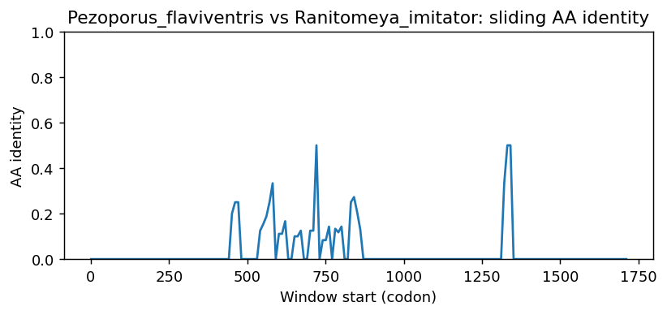
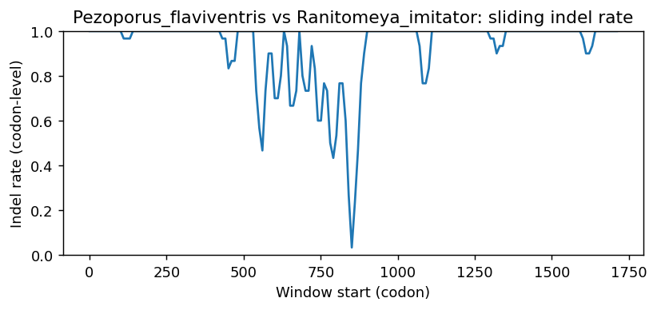
Pezoporus_flaviventris vs Eleutherodactylus_coqui
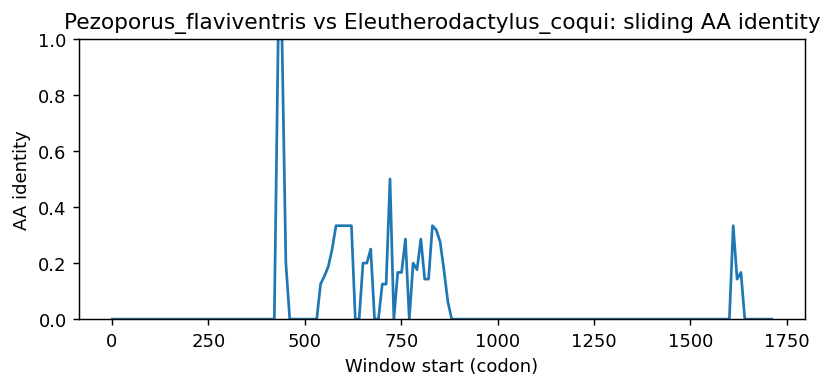
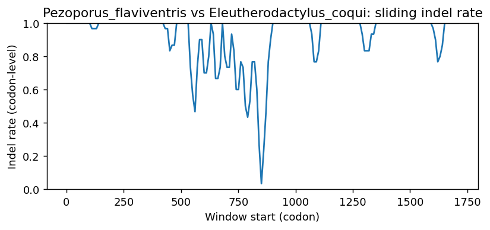
Pezoporus_flaviventris vs Bufo_gargarizans
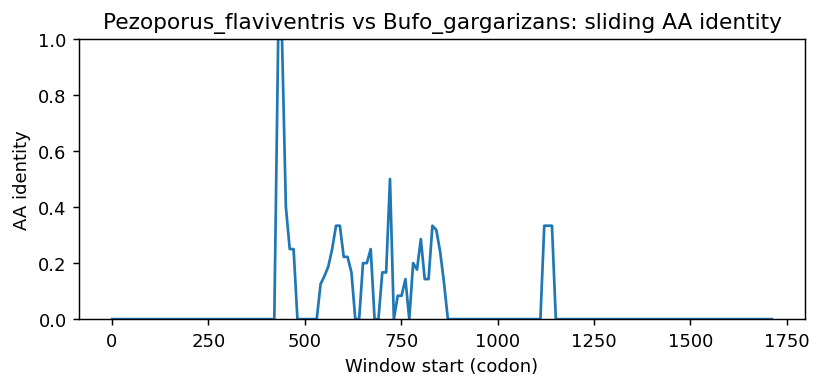
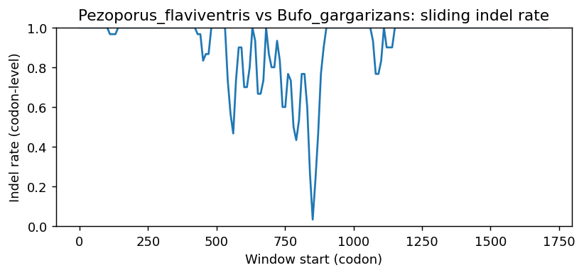
Pezoporus_flaviventris vs Pseudophryne_corroboree
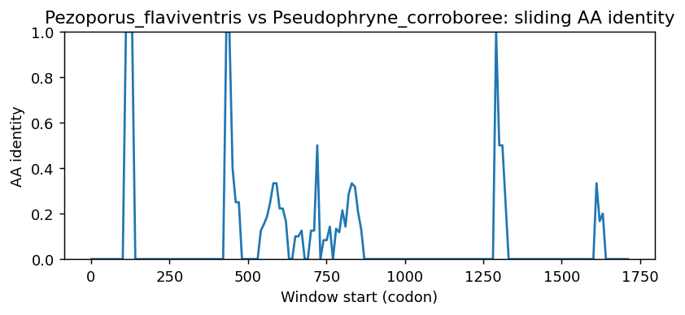
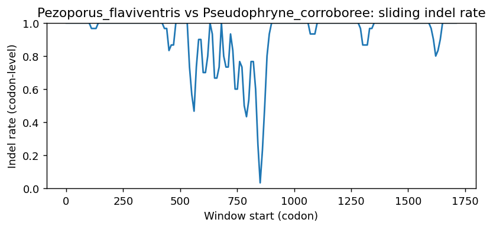
Pezoporus_flaviventris vs Bufo_bufo
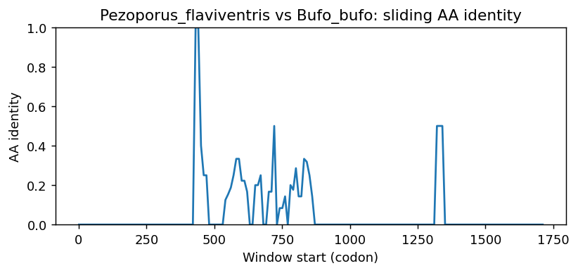
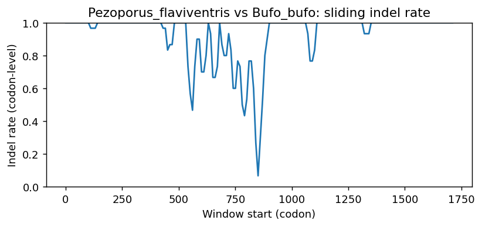
Pezoporus_flaviventris vs Bombina_bombina
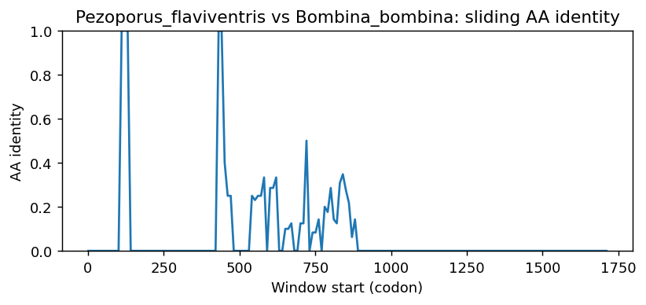
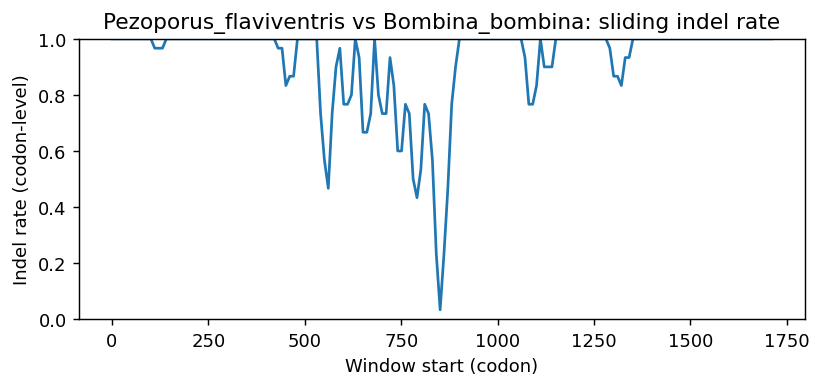
Methods (brief)
- CDS are translated (genetic code 1); proteins aligned by MAFFT when available, otherwise a progressive global aligner (BLOSUM62). Protein MSA is back-translated into a codon MSA.
- Pairwise metrics: AA/NT identities on aligned nongap positions; Ts/Tv; single-hit syn/nonsyn counts; gap events and largest contiguous gap cluster (codons); sliding-window AA identity and codon-level indel rate.
- Per-sequence diagnostics: GC content/skew, CpG density, AA low-complexity fraction via SEG-like entropy windows (win=12, H<2.2), and NT tandem repeats (homopolymers =5; di-nt =4 copies; tri-nt =3 copies).
- Correlations: Pearson/Spearman between AA identity and |GC difference|, mean AA LCR fraction, and mean NT repeat fraction across pairs.
- Risk classifier: combines identity, coverage, longest identical block, low-ID windows, max indel cluster, and up-ranks risk when mean LCR =0.25 or mean repeat =0.10 (soft-masking can remove seeds and reduce sensitivity).
Artifacts: pairwise_metrics.csv, per_sequence_composition.csv, correlations.csv, alignment_protein.faa, alignment_codon.fna.